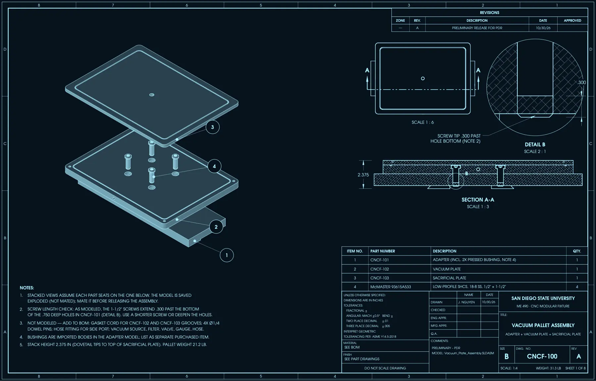
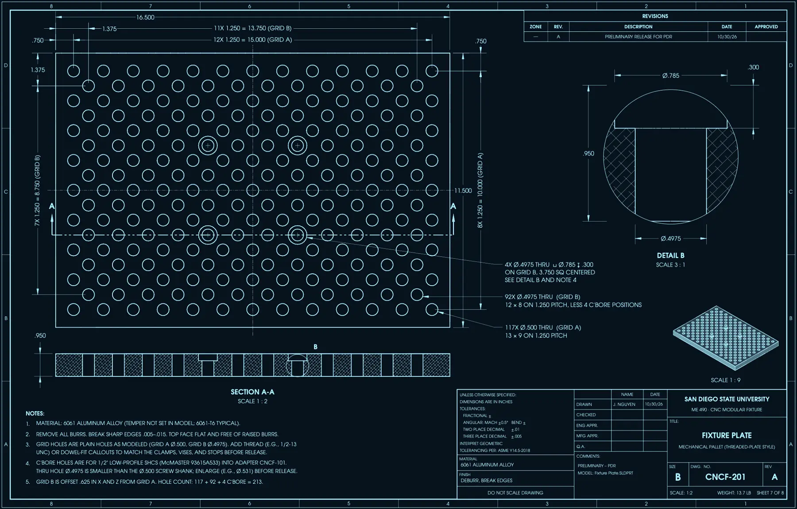
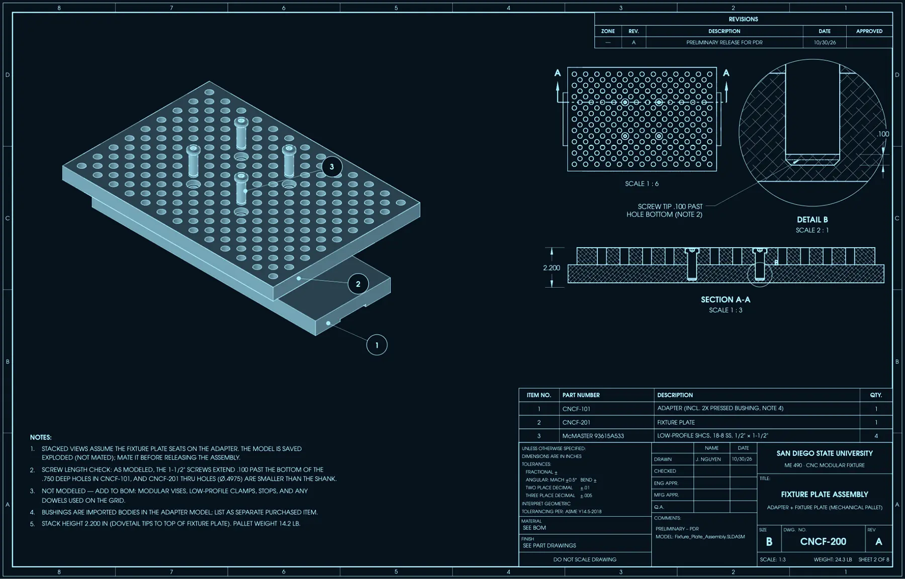
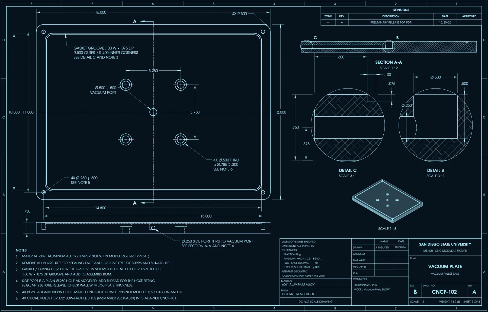
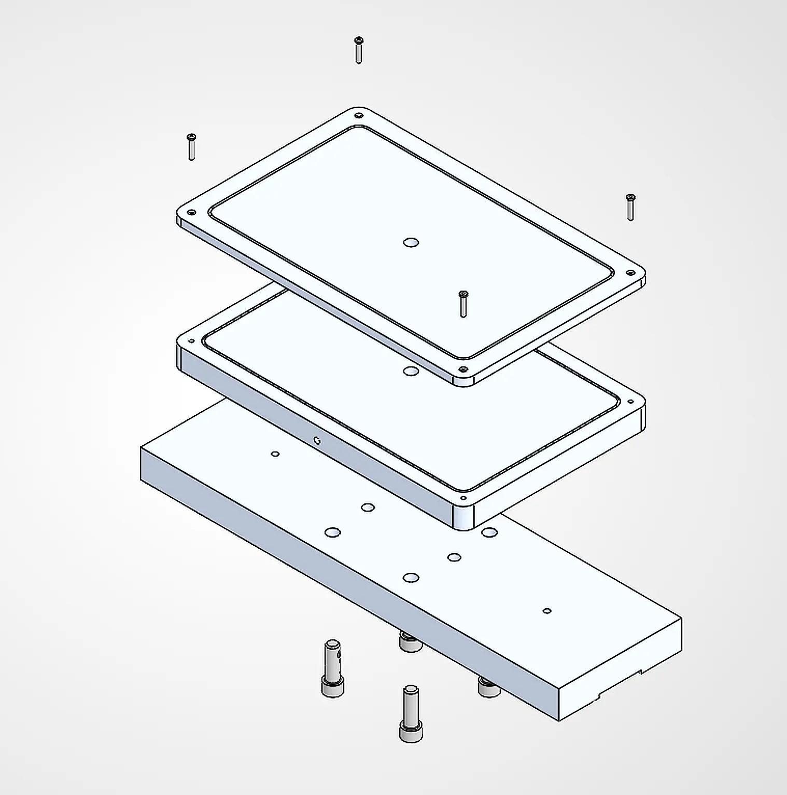
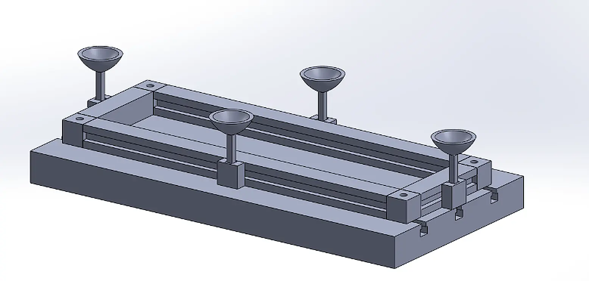

01The problem
Students and university projects regularly need to machine long, flat, or irregular parts on the shop's Haas VF-2YT and VF-4SS CNC mills. A standard vise can't grip them, so the shop either improvises or turns the work away. Our sponsor, the machine shop supervisor, asked for something light, modular, and fast to set up that can hold those parts firmly without distorting them.
02My role
As team lead, I own the project's direction and management from end to end. I defined the scope and requirements with our sponsor, built the plan and schedule, set role assignments across the team, and manage the $1,750 material budget. I led the research and design planning that shaped our concepts, drove the technical risk assessment, and led development of the bill of materials, along with the logistics of sourcing material and coordinating shop time.
I run our weekly team meetings and weekly sponsor reviews, keep the design documentation consistent, and make sure every subsystem decision ties back to the requirements. Teammates own detailed pieces of the analysis, trade studies, testing, and procurement; my job is to integrate that work into one coherent design and keep it on schedule and on budget.
03Concepts and trade study
We scored three concepts against weighted criteria. A suction-cup fixture was cheap but couldn't guarantee repeatability. A threaded fixture plate on the T-slots held parts well but was slow to change over. The winner keeps the rigid base of the shop's existing Orange Vise, adds an adapter, and lets vacuum or mechanical pallets swap on and off.
| Concept | Repeatability 25% | Holding 25% | Modularity 20% | Score / 5 |
|---|---|---|---|---|
| A · Suction cups | 2 | 2 | 3 | 2.70 |
| B · Threaded plate on T-slots | 3 | 5 | 2 | 3.05 |
| C · Adapter + swappable pallets | 4 | 4 | 5 | 4.15 |
The same approach drove the smaller decisions: an electric vacuum pump over a venturi for steady vacuum, RockLock-style pull studs for pallet locking, low-profile machinable clamps for tool clearance, 6061-T6 aluminum for the plates, and nitrile gaskets because they hold up to cutting oils and coolant.
04Holding-force analysis
The most useful finding was a negative one: vacuum alone is short on side load. That's why the design adds locating pins, stops, and clamps to the vacuum pallet instead of trusting suction to resist cutting forces.
05Design decisions after the PDR
After the review we simplified. Machining our own dovetailed adapter would have eaten budget and shop time, so we chose to buy a precision 6 × 20 × 1 in adapter plate (about $320, rated to 0.01 mm repeatability) and machine only our own hole pattern into it: four through-holes that bolt the vacuum plate down and pin holes sized to match Orange Vise hardware. Prototype fabrication and testing on the Haas mills run through spring 2027, across different part materials, geometries, and spindle speeds.
06Gallery






Click any image to enlarge. Technical drawings are shown in an inverted blueprint style.